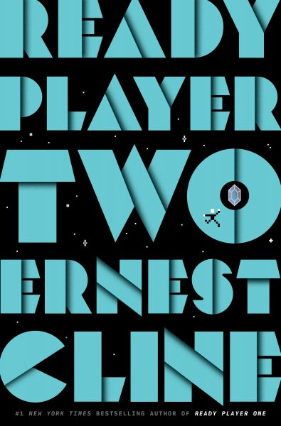

Ready Player Two
⭐️⭐️⭐️
This book is essentially a second love letter from the author to pop culture of the 80's and 90's. If you're okay with that, then you're in for a scifi story of a dystopian future, where VR is our main way of life, and the escapism it provides is the mental health supplement we need to deal with the crappy outside world we really have to deal with.
I don't live and die by 80's pop culture - in fact, I frequently feel annoyed by how much people feel like I should be in love with it. Consequently, I didn't understand or catch a good portion of the references the author makes. I found many of the events of this book rather implausible - most notably how anybody would know and instantly recognize so much random and ultra-obscure trivia from such a vast area of knowledge. Despite that, I still thoroughly enjoyed the story. I couldn't help but step back at times, and admire how things were woven together. Some of it was simply clever. Also, as much as I don't want to admit it, with some recent trends in technology, I'm not sure how implausible some of the futuristic elements are.
Lastly, at the end of the day, the first book was better, but this wasn't bad. Plus, it helps set up for subsequent books, which I wouldn't be opposed to reading as well.
- Previously: Born to Run
- Next: This Is How You Lose the Time War